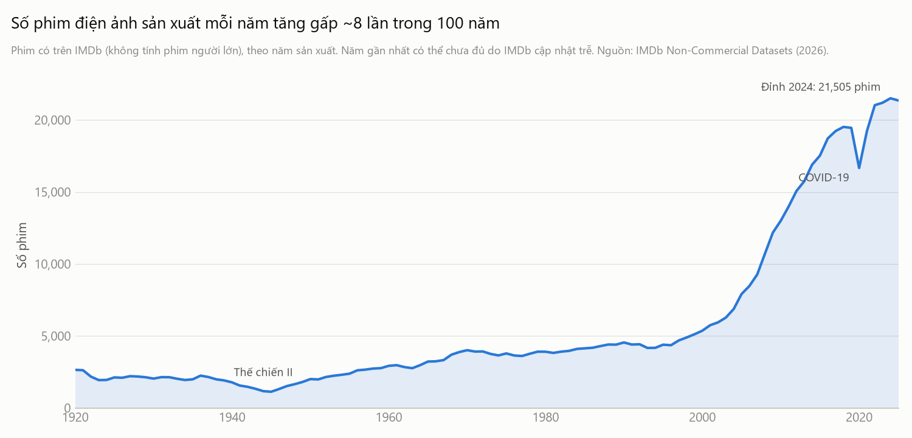
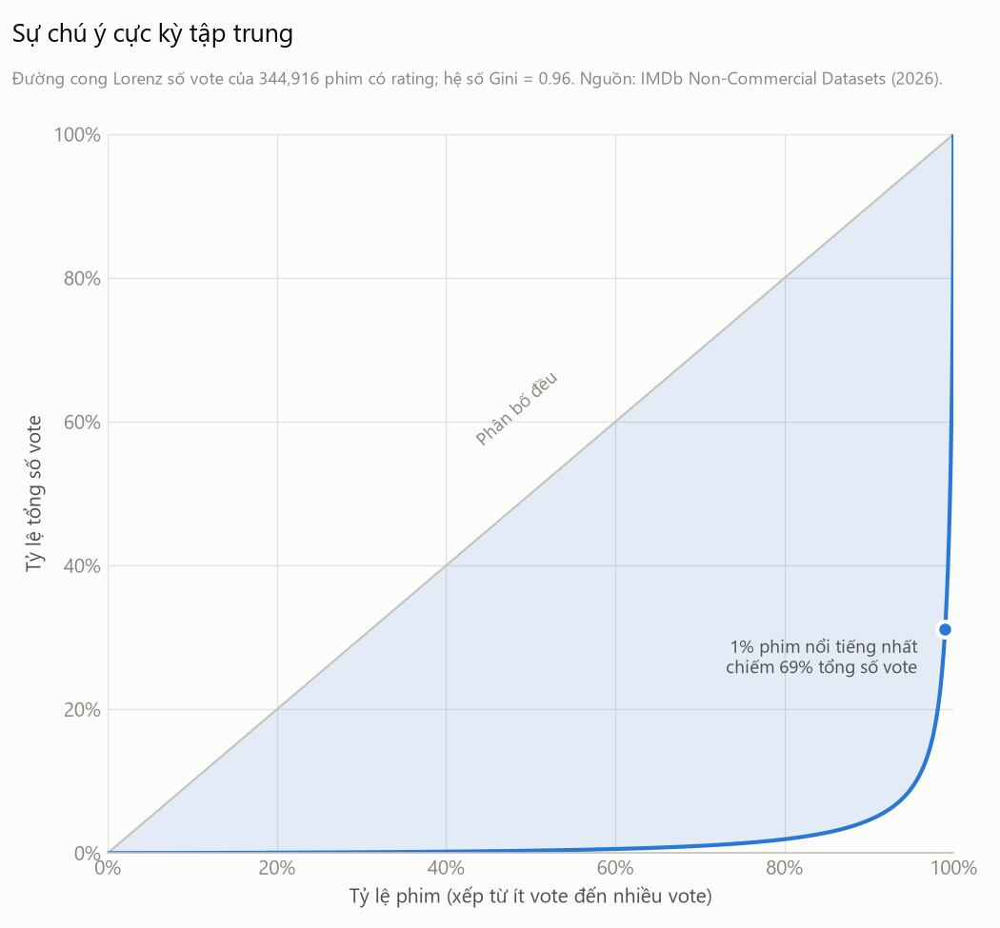
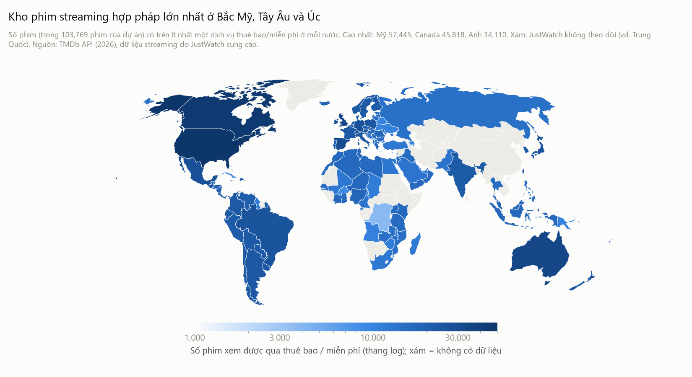
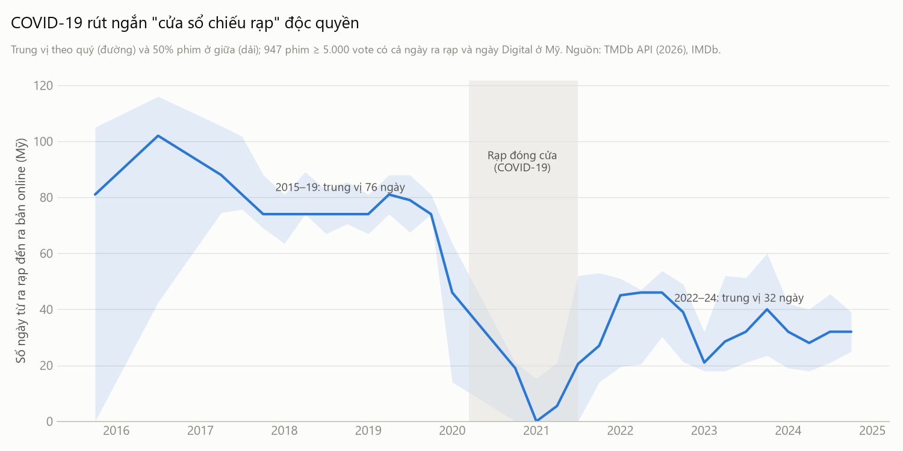
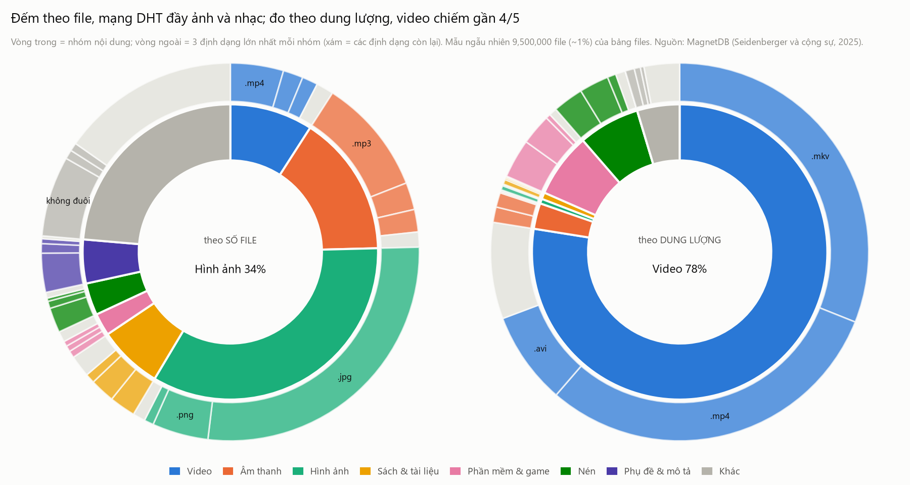
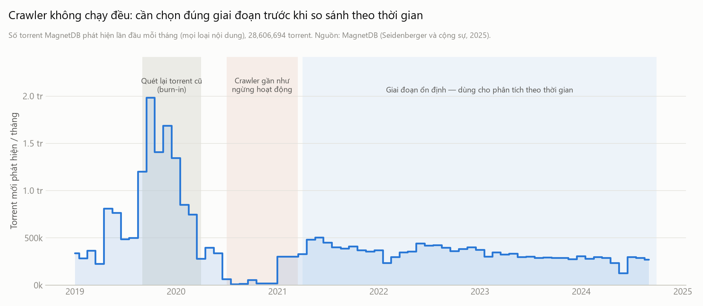
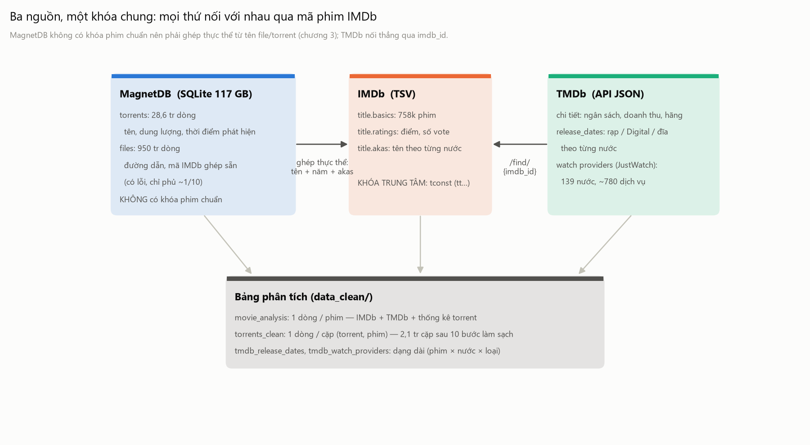
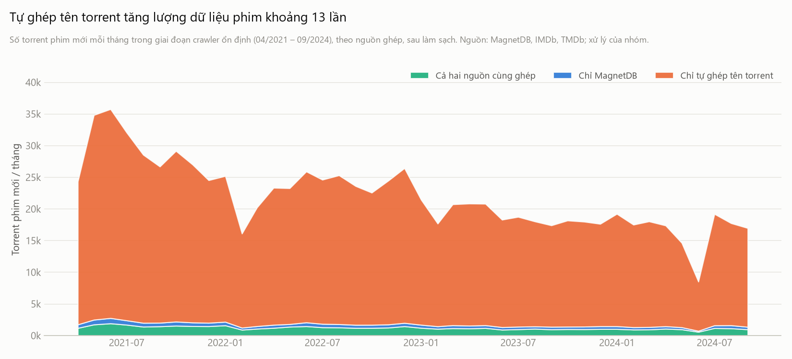

IMDb
Tên, năm phim, thể loại và đánh giá của người dùng.
Phim sau khi loại cờ is_adult trong danh mục gốc.
Điểm trung bình và lượt bình chọn có ý nghĩa khác nhau: mức đánh giá và mức độ quan tâm.
Những biểu đồ tổng quan của bài thuyết trình. Phần này dùng toàn bộ phạm vi của từng hình gốc và không chịu bộ lọc ở trang Khám phá.
Tên, năm phim, thể loại và đánh giá của người dùng.
Phim sau khi loại cờ is_adult trong danh mục gốc.
Điểm trung bình và lượt bình chọn có ý nghĩa khác nhau: mức đánh giá và mức độ quan tâm.
Ngày phát hành theo hình thức, quốc gia và nơi xem phim.
Hồ sơ tìm thấy trên TMDb trong tập được truy vấn của dự án.
Ngày phát hành có lịch sử; nơi xem là ảnh chụp lúc thu thập. Tập TMDb không phải toàn bộ kho IMDb.
Metadata torrent và thời điểm hệ thống thu thập phát hiện.
Torrent riêng biệt sau làm sạch trong cửa sổ gốc; gồm mọi cặp được pipeline giữ lại.
Một torrent có thể ghép với nhiều phim. Số torrent riêng biệt khác tổng số cặp torrent–phim.






Đơn vị, phạm vi và những điều cần biết khi diễn giải dashboard.
Bắt đầu từ IMDb rồi ghép trái với dữ liệu TMDb và kết quả ghép torrent. Phim chưa ghi nhận torrent được giữ với giá trị 0; thiếu hồ sơ TMDb được giữ thành trạng thái riêng.
Năm IMDb, thể loại, bình chọn tối thiểu và tên phim là các bộ lọc chung của ba góc nhìn. Hai bộ lọc tình trạng torrent và streaming chỉ áp dụng trong phần Torrent & đối chiếu.
Bình chọn và nơi xem là ảnh chụp năm 2026 theo tài liệu dự án; không mô tả trạng thái lịch sử vào từng ngày phát hiện torrent.
Điểm IMDb là đánh giá tổng hợp; lượt bình chọn phản ánh mức quan tâm trên IMDb. Dữ liệu không có nhận xét văn bản, điểm theo từng người dùng hoặc lịch sử thay đổi điểm.
Boxplot dùng khoảng 25–75%, trung vị và râu 10–90%. Ngưỡng bình chọn của bảng xếp hạng chỉ áp dụng cho 10 phim trong bảng đó; các biểu đồ còn lại giữ nhóm phim từ bộ lọc chung.
Lấy ngày sớm nhất theo phim, quốc gia và hình thức; chiếu rạp gộp hai loại limited và theatrical. Các biểu đồ lịch ở đầu phần Phát hành tính mốc đến 18/10/2026, loại riêng lịch tương lai. Cửa sổ rạp–Digital dùng hai mốc trong cùng quốc gia, chỉ giữ khoảng cách 0–365 ngày và ghi rõ số phim bị loại.
Nơi xem luôn là Mỹ, gồm lựa chọn streaming, thuê hoặc mua. Mỗi phim được đếm một lần trên mỗi dịch vụ. Bảng nơi xem hiện không có bản ghi Việt Nam; không diễn giải thiếu dữ liệu thành không có dịch vụ xem hợp pháp.
Ba biểu đồ ở cuối phần Phát hành có lựa chọn riêng: nhóm đang lọc hoặc mẫu gốc như notebook. Treemap tính phim phát hành 2000–2024 theo năm TMDb và gán mỗi phim cho nước đầu tiên trong origin_country, không đếm lặp phim đồng sản xuất.
Mẫu tài chính giữ phim năm TMDb 1980–2024, ngân sách từ 1 triệu USD và doanh thu từ 10.000 USD. Biểu đồ cực dùng phim trong mẫu này có ngày ra rạp Mỹ; tỷ lệ của mỗi nhóm chia cho tổng phim của chính nhóm đó. Bom tấn là doanh thu từ 300 triệu USD. Đường 2,5× là ngưỡng tham khảo, không phải lợi nhuận hay xác nhận hòa vốn thực tế. Tiền là USD danh nghĩa.
Theo phim: số torrent riêng biệt gắn với phim đó. Tổng qua phim: số cặp torrent–phim; một torrent có thể được tính cho nhiều phim trong một gói.
Chưa ghi nhận: không có trong dữ liệu đã ghép, lọc và cửa sổ quan sát. Giá trị 0 không chứng minh phim không được chia sẻ.
Không có số lượt tải, người xem hoặc thiệt hại doanh thu. Metadata chưa xác nhận nội dung hoặc quyền phân phối của từng tệp.
Slide giữ các hình gốc và điều kiện mẫu gốc. Dashboard tính trực tiếp từ nhóm phim đang chọn và giữ cả phim chưa ghi nhận torrent.
Biểu đồ thể loại trên slide so với mô hình dự đoán từ bình chọn. Biểu đồ thể loại trên dashboard là trung vị thô; hai hình trả lời hai câu hỏi khác nhau.
Độ trễ trên dashboard dùng WEB đầu tiên được ghi nhận trong cửa sổ gốc. Phim thiếu ngày không tham gia hình độ trễ; biên cửa sổ và bộ lọc trước Digital có thể ảnh hưởng kết quả.

